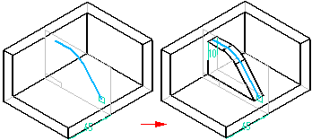
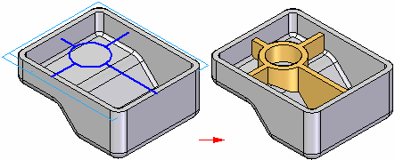

Adding ribs to parts
Use the Rib and Web Network commands to create ribs on a part.
Use the Rib command to construct a rib by extruding a profile. The Direction and Side steps allow you to control the shape of the rib.

Use the Web Network command to construct a series of webs. All webs constructed in the same operation become part of a single web network feature.
Note:
You can construct a web network as the base feature of a part using sketch geometry.
